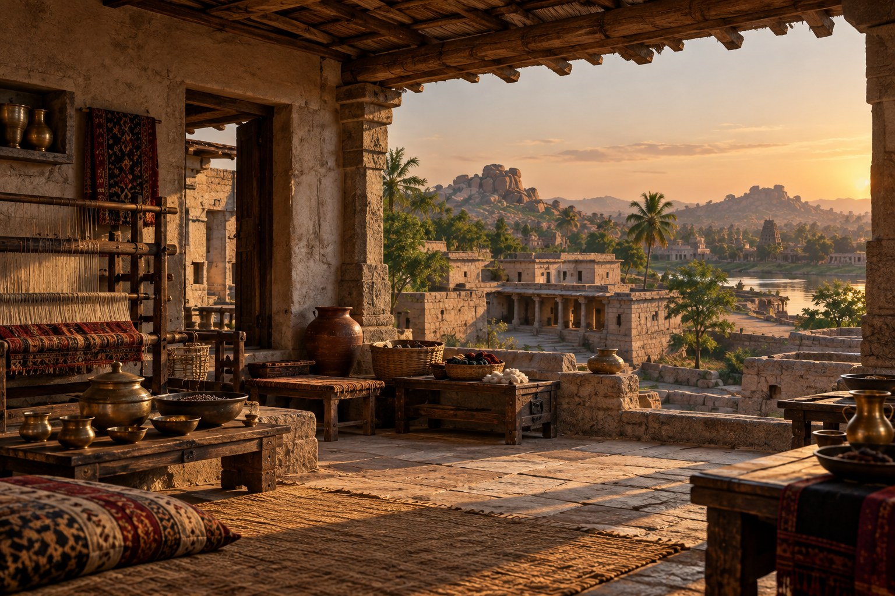

1550 — Vijayanagara
South India · An imagined textile artisan's household and workshop · Late afternoon

Behind the Investigation:
Research Note
Behind the Investigation explains the generative AI capabilities, technologies, and design decisions demonstrated by each Institute investigation.
Prompt Method Used
Grounded historical prompting. The visual direction draws on the documented Hampi landscape, Vijayanagara's sixteenth-century urban setting, and the wider history of South Indian crafts and trade. Unverified domestic details are explicitly identified as interpretation.
Skill Demonstrated
Historical Synthesis and Visual Storytelling. A visually coherent historical hypothesis paired with accessible source context, uncertainty statements, and interactive object interpretation.
Research Question
Can an AI-assisted environment evoke everyday artisan life in Vijayanagara around 1550 without presenting reconstructed interiors and objects as documented facts?
How It Works
Six unobtrusive circular markers identify interpretive features. Selecting a marker reveals context, supporting institutional references, and a statement of what remains uncertain. Subtle exterior light and water motion run separately from the image.
What This Demonstrates
Research-aware creative direction, geographic specificity, interface restraint, and explicit differentiation between historical documentation and visual speculation.
Technical Implementation
The background is an AI-generated illustration. Hotspots, content panels, navigation, and CSS ambient effects use deterministic HTML, CSS, and JavaScript. No live language model runs when a visitor selects an object.
Historical Limitations
Hampi's surviving monumental structures document important features of the former capital but do not establish this imagined household. The precise workshop layout, loom construction, textile motifs, furniture, brass vessels, river vista, and visible building forms have not been independently authenticated as a specific 1550 domestic scene.
Representation Audit
The setting foregrounds craft, labor, material culture, and ordinary prosperity instead of treating royal monuments as representative homes. The image has no people, and no single artisan household is claimed to represent all Vijayanagara residents. Architectural and object-level review by a specialist remains desirable.